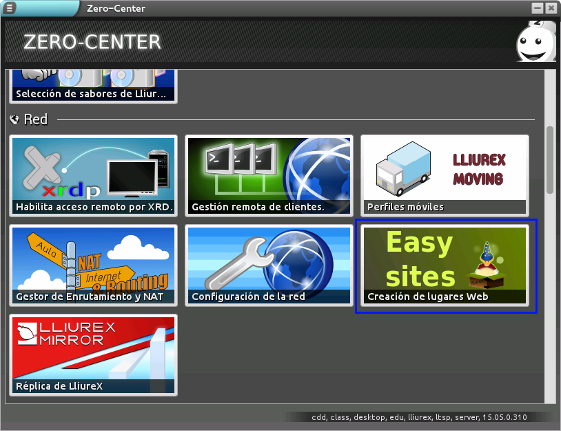
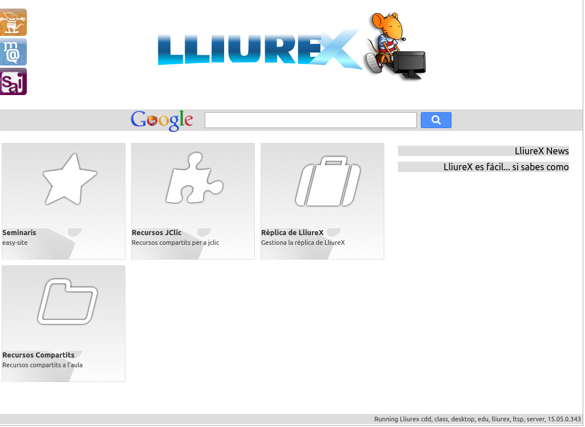

Easy-Sites
«One site to rule them all»
El podem executar des del Zero-center.


Què hem de configurar?

-
Un títol per al lloc
És el nom que apareixerà en la pàgina. -
La carpeta on estan els fitxers
Pot ser un CD-ROM, USB, etc. -
No funciona amb totes les editorials
Cal distingir entre diferents tipus de CD.
Resultat
-
Un accés en el web del servidor
Es crea un accés per a cada lloc que crees. -
Disponible per a tot l'alumnat
Configura-la com a pàgina d'inici. -
Afig tants llocs com vulgues.
És fàcil i ja saps com.